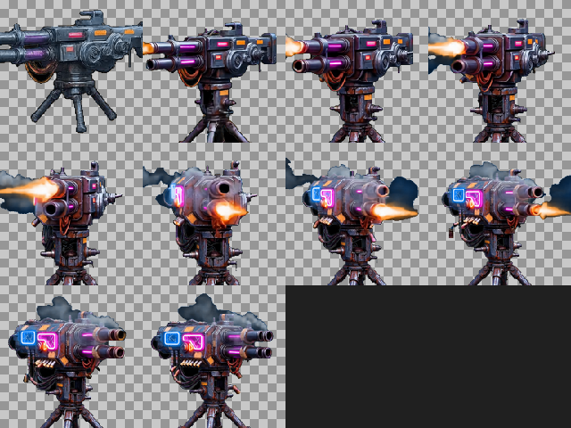
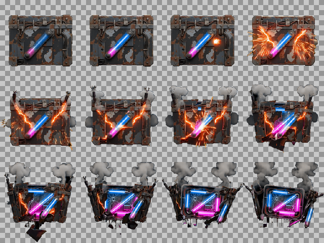
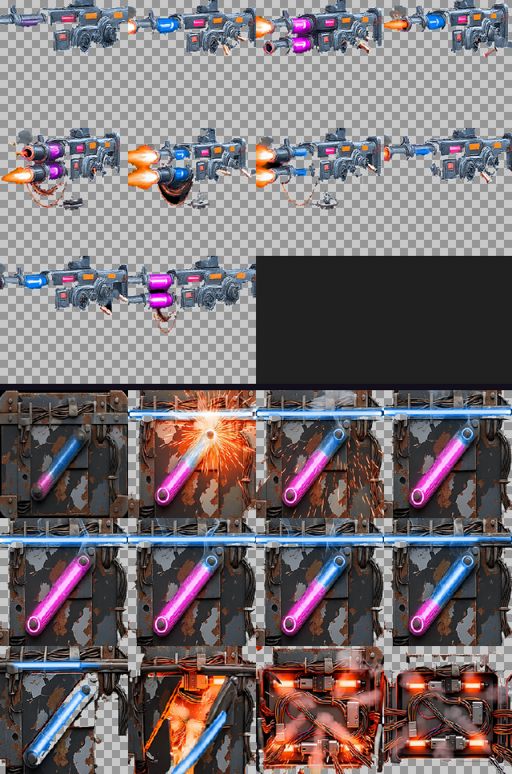

殭屍防禦 · 駐守物與補給箱
13 支動畫的前兩支試樣。確認方向之後再生剩下 11 支。



兩個問題都是 image-to-video 的參考圖造成的，跟 prompt 寫得夠不夠清楚無關：
(0,93,0)→(0,151,0) 的暗色漸層。去背門檻要拉到 130 才清得掉，而那個門檻連砲塔的深色三腳底座也一起吃掉。修法是先把參考圖墊到純綠底上並留白（物件佔 50~55%）。重生後背景變成均勻的 (0,253,0)，整支影片都維持住。這一步不花錢。
| 項目 | 第一版 | 第二版 |
|---|---|---|
| 背景色 | (0,93,0)→(0,151,0) 暗色漸層 | (0,253,0) 均勻 |
| 機砲塔 透明比例 | 0%~32% | 55%~90% |
| 機砲塔 三腳底座 | 被去背吃掉 | 完整 |
| 補給箱 透明比例 | 0%~26% | 51%~54% |
| 補給箱 構圖 | 推近到表面 | 整個箱子在畫面內 |
抽幀參數也定案了：駐守物 --zoom-tolerance 2.0（1.0 只出 4 幀，火光會撐大包圍盒），補給箱 1.5，都加 --largest-only。
| 項目 | 結果 | 金額 |
|---|---|---|
| 試樣 v1（2 支） | 作廢 | $0.64 |
| 試樣 v2（2 支） | 通過 | $0.64 |
| 剩餘 11 支（待確認後生） | — | $3.52 |
| 這批預計合計 | $4.80 |
原估 $4.16，多出的 $0.64 是作廢的第一版。
尚未寫入 Assets/